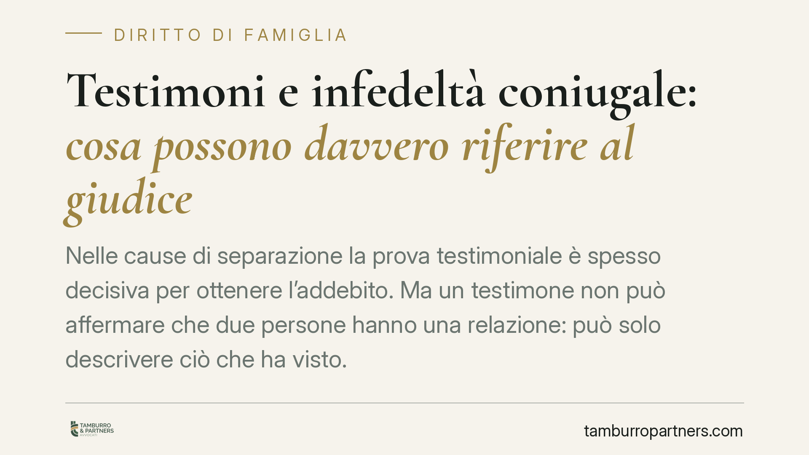

Testimoni e infedeltà coniugale: cosa possono davvero riferire al giudice
Nelle cause di separazione la prova testimoniale è spesso decisiva per ottenere l'addebito. Ma un testimone non può affermare che due persone "hanno una relazione": può solo descrivere ciò che ha visto. La distinzione tra fatto oggettivo e valutazione personale cambia il peso della testimonianza e, di conseguenza, l'esito del giudizio.

Il fatto: cosa può dire chi testimonia
Un testimone chiamato a deporre in una causa di separazione non può limitarsi a dichiarare che tra due persone "c'era una relazione extraconiugale". Quella è una conclusione, una qualificazione giuridica e valutativa, che spetta soltanto al giudice.
La giurisprudenza di merito, tra cui il Tribunale di Milano, ha ribadito un principio semplice ma spesso frainteso: il testimone riferisce fatti, non giudizi. Può raccontare di aver visto due persone abbracciarsi, entrare insieme in un appartamento, comportarsi in modo intimo. Non può, invece, affermare che quei comportamenti "provano un tradimento".
Inquadramento normativo
La regola trova fondamento nell'articolo 244 del Codice di procedura civile, che disciplina la prova testimoniale. La deposizione deve vertere su fatti specifici e determinati di cui il testimone abbia conoscenza diretta.
È vietata la cosiddetta testimonianza valutativa: il teste non è chiamato a esprimere opinioni, giudizi di valore o qualificazioni. Se lo fa, quella parte della dichiarazione perde efficacia probatoria e il giudice non può fondarvi la propria decisione.
Nel diritto di famiglia la questione diventa centrale quando si chiede l'addebito della separazione ai sensi dell'articolo 151, secondo comma, del Codice civile. L'addebito è la dichiarazione con cui il giudice attribuisce a uno dei coniugi la responsabilità della fine del matrimonio, per violazione dei doveri coniugali (tra cui la fedeltà). Comporta conseguenze pratiche rilevanti, in particolare sulla perdita del diritto all'assegno di mantenimento e sui diritti successori.
Perché la distinzione conta
Chi vuole ottenere l'addebito deve provare due cose: la violazione del dovere di fedeltà e il nesso tra quella violazione e la crisi del matrimonio. La sola infedeltà non basta se il legame coniugale era già compromesso.
In questo scenario, una testimonianza costruita male è inutile. Se il teste dice "lo tradiva", la frase è priva di valore. Se dice "l'ho visto uscire più volte dall'abitazione del signor X alle sei del mattino, per un periodo di alcuni mesi", quel racconto fornisce al giudice elementi concreti da valutare.
È il giudice, a quel punto, a trarre le conclusioni. Il ragionamento probatorio parte sempre da fatti oggettivi: circostanze di tempo, di luogo, comportamenti visibili. Da qui si arriva, per presunzione, alla ricostruzione della relazione.
Implicazioni pratiche per chi affronta una separazione
Chi intende avvalersi di testimoni deve preparare le capitolazioni, cioè le domande, in modo che ciascuna verta su un singolo fatto verificabile. Domande generiche o valutative rischiano di essere dichiarate inammissibili dal giudice ancora prima dell'udienza.
Allo stesso modo, chi si difende può contestare le testimonianze avversarie proprio sul terreno della loro genericità o del loro carattere valutativo, chiedendone l'esclusione.
Va ricordato che la prova può integrarsi con altri elementi: documenti, messaggi, fotografie, relazioni investigative. Nessun singolo mezzo, da solo, è quasi mai decisivo.
Cosa fare in concreto
- Individua testimoni con conoscenza diretta. Chi ha visto o sentito personalmente vale; chi riferisce voci di terzi ha efficacia molto ridotta.
- Formula capitoli su fatti puntuali. Ogni domanda deve indicare quando, dove e cosa: evita ogni qualificazione come "relazione" o "tradimento".
- Raccogli riscontri oggettivi in anticipo. Documenti, corrispondenza e, se necessario, indagini investigative legittime rafforzano la prova testimoniale.
- Valuta il nesso con la crisi coniugale. Prima di puntare sull'addebito, verifica che l'infedeltà sia stata causa, e non conseguenza, della rottura.
- Fatti assistere prima di agire. Una strategia probatoria sbagliata è difficile da correggere in corso di causa.
La testimonianza resta uno strumento prezioso nelle cause di famiglia, ma solo se costruita con rigore. Il confine tra fatto e valutazione non è una formalità: è ciò che distingue una prova efficace da una dichiarazione che il giudice non potrà utilizzare.
---
Contributo informativo a cura di Tamburro & Partners - Avv. Giuseppe Tamburro. Non costituisce parere legale.
Ogni famiglia ha il suo equilibrio.
Separazione, divorzio, affidamento, assegno: se vuoi un confronto riservato su una specifica situazione, scrivi allo studio. Ti rispondiamo entro un giorno lavorativo.